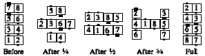

From columns: The #1 dancer in each column Trail Off and walk forward, followed by the other dancers in the column. Finishes back in columns close together (requires an adjustment at the end). If the caller gives a fraction, then one person does the Trail Off for each 1/4 in the fraction, and the resulting columns balance themselves so that they are mutually centered. Thus, for Cross Invert the Column 3/4, the first 3 dancers in each column move across and around the other column, finishing in an "H":
